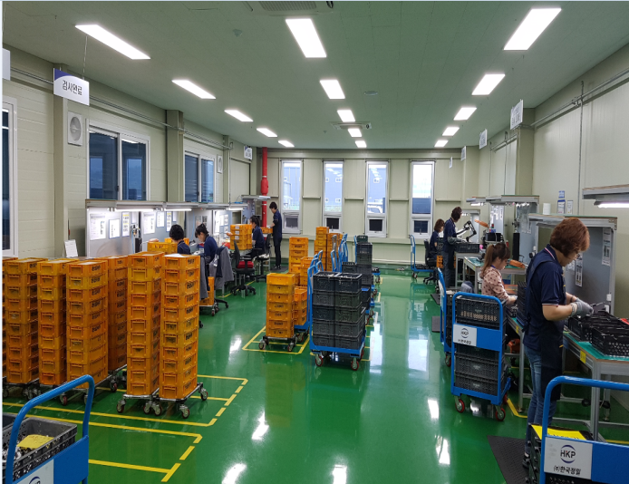

주요 생산품목
CNC 선반 기반 엔진·변속기·조향 부품과 MCT 기반 엔진·변속기 부품을 생산합니다.
회사 개요, 주요 생산품목, 주요 고객, 생산 인프라를 한눈에 확인할 수 있습니다.

CNC 선반 기반 엔진·변속기·조향 부품과 MCT 기반 엔진·변속기 부품을 생산합니다.
대한소결금속㈜, 존슨일렉트릭오퍼레이션스㈜, 대광소결금속㈜ 및 BorgWarner, Tesla, MCA, GM 등.
정밀가공, 품질관리, 자동화, 개발 대응을 연결하여 고객 신뢰를 강화하는 생산 체계를 지향합니다.

자동차 산업의 핵심부품 생산에 필요한 정밀가공 기술과 공정관리 체계를 바탕으로 제품 품질과 납기 대응력을 동시에 확보하고 있습니다.